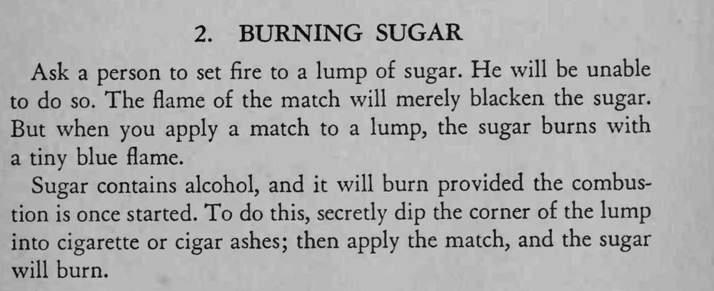

别人怎么点都点不着的方糖，魔术师一划火柴，糖块便冒出蓝色的火苗。
灰要蘸在角上、动作要隐蔽，点燃时让火苗先接触蘸灰处。

Ask a person to set fire to a lump of sugar. He will be unable to do so. The flame of the match will merely blacken the sugar. But when you apply a match to a lump, the sugar burns with a tiny blue flame. Sugar contains alcohol, and it will burn provided the combustion is once started. To do this, secretly dip the corner of the lump into cigarette or cigar ashes; then apply the match, and the sugar will burn.